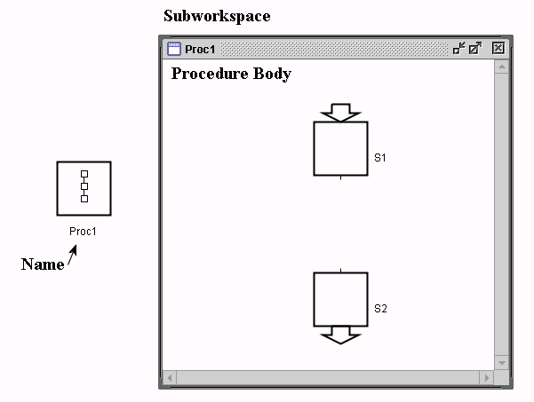
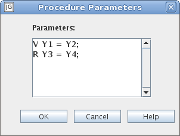

Language Reference - FC - Procedure

Please read Language Overview - Procedures first.
The procedure may not contain other procedures, inputs, and outputs.
In addition to ordinary variables it is also possible to use workspace objects as procedure parameters provided
that they only contain ordinary variables and other workspace objects with the same restriction.
Procedure parameters can be assigned values both using call-by-value and call-by-reference.
Workspace object parameters can only be assigned values using call-by value.
When the exit step of a procedure is activated the behavior differs depending on in which way the procedure was invoked.
If the procedure was invoked from a procedure step then the transitions connected to the output port of the procedure step are enabled.
When one of these fires the exit step and the procedure step are deactivated and the procedure call is terminated.
If the procedure was invoked in any other way then the exit step is immediately deactivated and the procedure call is terminated.
Text Methods
Common Methods
spawn()
Context Menu
-
Show/Hide Body
Toggle the visibility of the subworkspace.
-
Table
Opens an Inspector
for the subworkspace.
-
Parameters
Opens an editor for the call parameters that are used when the procedure is started manually.
See Call Parameters Syntax.

-
Start
Opens a dialog from which it is possible to call the procedure manually.

Each call invoked in this way will be executed in a separate thread
with a custom scan cycle time.
-
Calls
Opens a list with all currently executing invocations of the procedure.
Select one to open that particular procedure call.